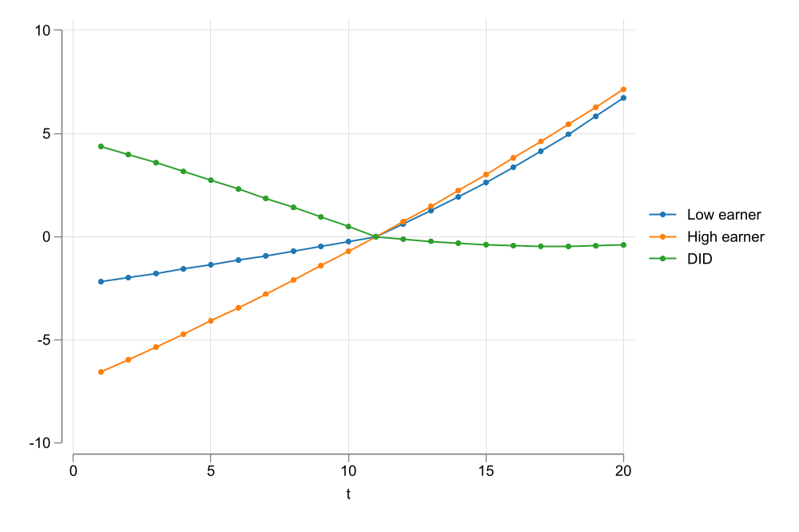
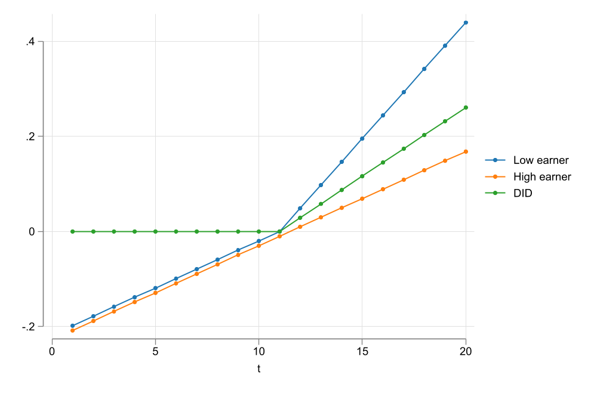
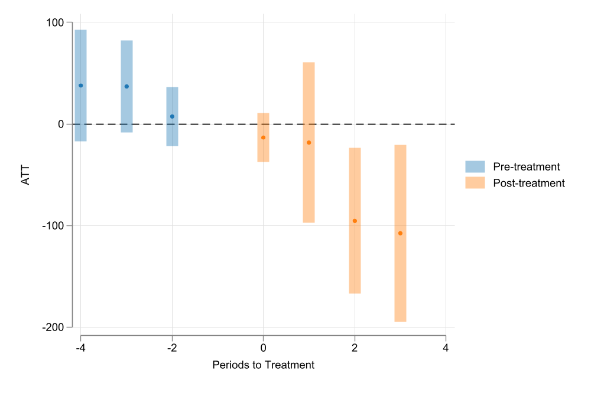

Nonlinear DID
Lessons from Staggered Linear Differences in Differences
Introduction
- Differences in Differences (DiD) design is one of the most popular methods in applied microeconomics, because it requires relatively few assumptions to identify treatment effects.
- No anticipation,
- Parallel trends,
- No spillovers
- The canonical DiD, a 2x2 design, simply compares means (or conditional means) of the outcome variable (before after x treated non-treated) to identify treatment effects.
- Thus it can be used even if outcome is a limited dependent variable (binary, count, etc) (parallel to the linear regression case)
- Because the Canonical design is rather limited, many extensions have been proposed to handle more complex scenarios: Staggered Treatment with GxT DID.
- Early Extensions (infamous TWFE) have been shown to be problematic. (negative weights and bad controls)
- but more recent approaches (See Roth et al. (2023)) have shown how can one better use these designs to identify treatment effects, avoiding the simple-TWFE problems.
- Linear models, however, have limitations:
- Linear models do a poor job interpolating and predicting LDV outcomes
- Parallel trends assumptions may only be credible under specific functional forms
Disclaimer:
who am I not?
Not Andrew Goodman-Bacon
Among others, Andrew showed the problems of using TWFE in the presence of staggered adoption of the treatment.
Because of treatment timing, later treated units are compared to bad controls (early treated ones), in potential violation of the parallel trends assumption.
This also relates to negative weights.
See Goodman-Bacon (2021)
Not Pedro Sant’Anna
Pedro and Brantly proposed deconstructing the GxT problem. Consider only good 2x2 DD designs to identify Treatment effects in DID.
Agregate them as needed to obtain the desired treatment effect (weighted Average). (dynamic, average, across time, across groups, etc)
Along with Jonathan Roth, discuss the problem of PTA and functional forms. Not all may be valid.
see Callaway and Sant’Anna (2021) and Roth and Sant’Anna (2023)
Not Jeffrey Wooldridge
Fernando Rios-Avila

- I have followed some of the developments in DID with staggered adoption of the treatment.
- Implemented few things (
drdid/csdid/csdid2/jwdid) - Understood few others (comparison groups, efficiency, negative weights, nonlinear models)
- Implemented few things (
- And today, I will be providing some of my insights regarding the empirical analysis of nonlinear DID.
- I will rely heavily on Wooldridge (2023),
Basics: 2x2 DiD
In the 2x2 DID design, we have 2 groups:
- Control (\(D=0\)) and treated (\(D=1\)),
Which are observed for two periods of time:
- Before (\(T=0\)) and after (\(T=1\)) the treatment.
For all groups and periods of time, we observe the realized outcome \(Y_{i,t}\), but cannot observe all potential outcomes \(Y_{i,t}(D)\).
Realized outcomes are determined by the following equation:
\[Y_{i,t}=D_i Y_{i,t}(1) + (1-D_i) Y_{i,t}(0) \]
If treatment occured at some point between T0 and T1, and we could observe all potential outcomes, the estimate of interested, Average Treatment effect, could be estimated as follows:
\[ATT = E(Y_{i,1}(1) - Y_{i,1}(0)|D_i=1) \]
For the treated, we observe \(Y_{i,1}(1)\), but cannot observe \(Y_{i,t}(0)\) (counterfactual), thus, to identify Treatment Effects, we need to impose some assumptions.
- PTA:
\[\begin{aligned} E(Y_{i,1}(0) - Y_{i,0}(0)|D_i=1) &= E(Y_{i,1} - Y_{i,0}|D_i=0) \\ E(Y_{i,1}(0)|D_i=1) &= E(Y_{i,0}(0)|D_i=1) + E(Y_{i,1} - Y_{i,0}|D_i=0) \end{aligned} \]
- No Anticipation: \[Y_{i,0}(1) = Y_{i,0}(0)=Y_{i,0}\]
Thus, ATT can be estimated as follows:
\[\begin{aligned} ATT &= E(Y_{i,1}(1)|D_i=1)-E(Y_{i,1}(0)|D_i=1) \\ &= E(Y_{i,1}|D_i=1)- \Big(E(Y_{i,0}|D_i=1) + E(Y_{i,1} - Y_{i,0}|D_i=0) \Big) \\ &= E(Y_{i,1}-Y_{i,0}|D_i=1)- E(Y_{i,1} - Y_{i,0}|D_i=0) \end{aligned} \]
- And the Same could be done via Regressions:
\[y_{i,t} = \beta_0 + \beta_1 T + \beta_2 D_i + \theta (D_i \times T) + \epsilon_{i,t} \]
- ATT identification relies on the Parallel trend assumption.
How to test for PTA?
PTA is a non-testable assumption, because we do not observe all potential outcomes.
However, if we “move”, from the 2x2 design, it may be possible to test if PTA hold Before treatment.
Consider a case of T periods of time, and that treatment happen at period G.
Say we estimate the ATT comparing periods T and T-1, for any T<G.
\[ATT(T) = E(Y_{i,T} - Y_{i,T-1}|D_i=1) - E(Y_{i,T} - Y_{i,T-1}|D_i=0) \]
- If there is no anticipation, and Parallel trends hold, then \(ATT(T)=0 \text{ if } T<G\)
- This is what Callaway and Sant’Anna (2021) uses for PTA testing
How to test for PTA?
- Alternatively, one could simply estimate all ATT’s using period G-1 as baseline period (
long2differences):
\[ATT^2(T) = E(Y_{i,T} - Y_{i,G-1}|D_i=1) - E(Y_{i,T} - Y_{i,G-1}|D_i=0) \]
- And use all post-treatment periods to estimate the ATT (\(T\geq G\))
- and use all pre-treatment periods to test for PTA (\(T<G\))
As suggested by Wooldridge (2023), one of the reasons PTA may not hold is because we may be analyzing the wrong model.
- consider two groups of workers, high and low earners, that experience the same wage growth. (parallel trends in relative terms)
- If we observe wages at levels, parallel trends would be violated
- And Post treatment estimates will be missleading


PTA may hold for \(G(\bar Y)\)
A similar story could be told about other types of transformations.
In general, it is possible that PTA hold for some other monotonic transformation of the outcome variable.
\[G^{-1}\Big( E_1 [Y_{i,1}(0)] \Big) -G^{-1}\Big(E_1[ Y_{i,0}(0) ] \Big) = G^{-1}\Big(E_0[Y_{i,1}]\Big) - G^{-1}\Big(E_0[Y_{i,0}]\Big) \]
This is very similar to the PTA assumption explored in Roth and Sant’Anna (2023).
\[E_1\Big[g(Y_{i,1}(0))\Big] - E_1\Big[g(Y_{i,0}(0))\Big] = E_0\Big[g(Y_{i,1})\Big] - E_0\Big[g(Y_{i,0})\Big] \]
Wooldridge idea: It may be possible to identify ATTs using correct functional forms, through the latent index.
How do things Change?
- Using this insight, we can go back to the 2x2 design, and see how things change.
Before:
\[E(y_{i,t}|D,T)=\beta_0 + \beta_1 T + \beta_2 D_i + \theta (D_i \times T) \]
After:
\[E(y_{i,t}|D,T)=G\Big(\beta_0 + \beta_1 T + \beta_2 D_i + \theta (D_i \times T)\Big) \]
- For the practitioner, the extended Nonlinear DID simply requires choosing a functional form that better fits the data.
- Poisson, logit,
fractional regression, multinomial model, Linear model, etc
- Poisson, logit,
Extension I: Adding Covariates
Many papers in the literature consider the use of covariates in the estimation of the ATT.
The lessons from Sant’Anna and Zhao (2020):
- The choosen covariates should be time fixed, to avoid contamination of the treatment effect.
- Using covariates allows relaxing the parallel trends assumption: PTA hold for specific groups of individuals. (if not for the whole population due to compositional changes)
In the 2x2 DID-Regression, covariates can be added with interactions:
\[\begin{aligned} y_{i,t} &= \beta_0 + \beta_1 D + \beta_2 T + \theta (D \times T) \\ &+ X\gamma + D \times X\gamma_d + T \times X\gamma_T + D \times T (X-\bar X )\lambda + \epsilon_{i,t} \end{aligned} \]
- The same could be done in the nonlinear case
Extension II: GxT DiD
- The 2x2 design is rather limited, because often people have access to multiple periods of time, with differential treatment timing. (staggered adoption of the treatment)
- I call this the GxT design (G groups, T periods of time)
- The majority of the papers that analyze this case impose an additional assumption:
- Treatment is not Reversable: Once treated always treated
NOTE: Because of the interactions required, adding covariates would rapidily “consume” degrees of freedom. (may be a problem with nonlinear models).
How to see this? --> tab tvar gvar
The Problem
- Early extensions of the 2x2 design to the GxT design, relied on the TWFE estimator. \[y_{i,t} = \delta_i + \delta_t + \theta^{fe} D_{i,t} + e_{i,t}\]
where \(D_{i,t}=1\) only after treatment is in place, and zero otherwise.
- This model has been shown to be problematic, because of How OLS estimates the \(\theta^{fe}\) parameter.
- \(\theta^{fe}\) is a weighted average of all possible 2x2 DID designs. Goodman-Bacon (2021)
- Some designs use early treated units as controls for late treated units, which might be a violation of the parallel trends assumption.
Avoiding the Problem
Callaway and Sant’Anna (2021) proposes a simple solution: Deconstruct the problem into smaller pieces (2x2 DIDs), and aggregate them as needed.
Wooldridge (2021), however, proposes a different solution: Use the correct functional form to estimate the ATTs.
\[\text{Instead of: }Y_{i,t} = \delta_i + \gamma_t + \theta^{fe} PT_{i,t} + \epsilon_{i,t}\]
\[\text{Use: }Y_{i,t} = \delta_i + \gamma_t + \sum_{g \in \mathbb{G}} \sum_{t=g}^T \theta_{g,t} \mathbb{1}(G=g,T=t) + \epsilon_{i,t}\]
- Their Message: Embrace heterogeneity across time and cohorts.
An added Insight
The approach proposed by Wooldridge (2021), is more efficient than Callaway and Sant’Anna (2021), because it uses all pre-treatment data to estimate the ATTs. (Callaway and Sant’Anna (2021) uses only one pre-treatment period)
However, doing this doesn’t allow you to test for PTA directly, unless we use an alternative approach:
\[Y_{i,t} = \delta_i + \gamma_t + \sum_{g \in \mathbb{G}} \sum_{t=t_0}^{g-2} \theta_{g,t}^{pre} \mathbb{1}(G=g,T=t) + \sum_{g \in \mathbb{G}} \sum_{t=g}^T \theta_{g,t}^{post} \mathbb{1}(G=g,T=t) + \epsilon_{i,t}\]
Implementing NL-DID the JW way
- One of the advantages of the approaches proposed by Wooldridge (2021) and Wooldridge (2023), is that they can be directly estimated using regressions.
- The hard part is to construct all the interactions required for the model to work.
- And a second challenge is to aggregate the results.
jwdid
jwdidis a simple command that helps with the construction of all required interactions that could be used to implement Wooldridge approach.It is flexible enough, in that it allows you to choose different estimators that would better fit your data.
it comes with its own post estimation commands that can help you aggregate the results into simple ATT, dynamics effects, across periods, across years, etc.
Lets take it for a spin
Command Syntax
jwdid- Command Name. In charge of getting all interactions -right-depvar[indepvar]- Declare the dependent variables. Independent variables are optional. They should be time fixed.[if][in][weight], Declares sample and weights. OnlyPWis allowed.
Command Main Options
jwdid: main optionsivar(varname): Panel indicator. If not declared, command assumes one is using repeated cross sections.cluster(varname): Cluster variable. To request a clustered standard error other than ativarlevel. Recommended with RC.tvar(varname)ortime(varname): Required, Time variable. There are two ways to call it for compatability withcsdid.gvar(varname): Group variable. Indicates the timing of when a unit has ben treated.trtvar(varname): If using Panel data, one could instead provide the post-treatment dummy.- If data is repeated crossection, one requires using
trgvar(varname)(Pseudo panel indicator).
- If data is repeated crossection, one requires using
Extra Options
group: Requests using group fixed effects, instead of individual fixed effects (default)never: Request to use alternative specification that allows to test for PTA. (default is to use the standard specification)- Linear and Nonlinear models:
method(command, options): Request to use a specific method to model the data. Default is using linear regression viareghdfe.- the option part allows you do include specific options for the method. (e.g.
method(glm, link() family()))
Example 1: Min Wages on Employment CS data
clear all
qui:ssc install frause
qui:frause mpdta, clear
frause mpdta, clear
jwdid lemp, ivar(county) tvar(year) gvar(first)(Written by R. )
WARNING: Singleton observations not dropped; statistical significance is biased
> (link)
(MWFE estimator converged in 2 iterations)
HDFE Linear regression Number of obs = 2,500
Absorbing 2 HDFE groups F( 7, 499) = 3.82
Statistics robust to heteroskedasticity Prob > F = 0.0005
R-squared = 0.9933
Adj R-squared = 0.9915
Within R-sq. = 0.0101
Number of clusters (countyreal) = 500 Root MSE = 0.1389
(Std. err. adjusted for 500 clusters in countyreal)
------------------------------------------------------------------------------
| Robust
lemp | Coefficient std. err. t P>|t| [95% conf. interval]
-------------+----------------------------------------------------------------
first_treat#|
year#|
c.__tr__ |
2004 2004 | -.0193724 .0223818 -0.87 0.387 -.0633465 .0246018
2004 2005 | -.0783191 .0304878 -2.57 0.010 -.1382195 -.0184187
2004 2006 | -.1360781 .0354555 -3.84 0.000 -.2057386 -.0664177
2004 2007 | -.1047075 .0338743 -3.09 0.002 -.1712613 -.0381536
2006 2006 | .0025139 .0199328 0.13 0.900 -.0366487 .0416765
2006 2007 | -.0391927 .0240087 -1.63 0.103 -.0863634 .007978
2007 2007 | -.043106 .0184311 -2.34 0.020 -.0793182 -.0068938
|
_cons | 5.77807 .001544 3742.17 0.000 5.775036 5.781103
------------------------------------------------------------------------------
Absorbed degrees of freedom:
-----------------------------------------------------+
Absorbed FE | Categories - Redundant = Num. Coefs |
-------------+---------------------------------------|
countyreal | 500 500 0 *|
year | 5 0 5 |
-----------------------------------------------------+
* = FE nested within cluster; treated as redundant for DoF computation
Iteration 0: log pseudolikelihood = -2980537.4
Iteration 1: log pseudolikelihood = -2980526.5
Iteration 2: log pseudolikelihood = -2980526.5
Poisson regression Number of obs = 2,500
Wald chi2(14) = 225.38
Log pseudolikelihood = -2980526.5 Prob > chi2 = 0.0000
(Std. err. adjusted for 500 clusters in countyreal)
------------------------------------------------------------------------------
| Robust
emp | Coefficient std. err. z P>|z| [95% conf. interval]
-------------+----------------------------------------------------------------
first_treat#|
year#|
c.__tr__ |
2004 2004 | -.0080499 .0100858 -0.80 0.425 -.0278177 .0117178
2004 2005 | -.0252131 .0176754 -1.43 0.154 -.0598562 .0094299
2004 2006 | -.051965 .0197745 -2.63 0.009 -.0907222 -.0132077
2004 2007 | -.0672208 .0192207 -3.50 0.000 -.1048926 -.029549
2006 2006 | .055212 .0330023 1.67 0.094 -.0094714 .1198954
2006 2007 | .0109993 .04294 0.26 0.798 -.0731617 .0951602
2007 2007 | -.060675 .0149793 -4.05 0.000 -.0900339 -.0313161
|
first_treat |
2004 | .4789133 .4347691 1.10 0.271 -.3732184 1.331045
2006 | .6010118 .3248861 1.85 0.064 -.0357532 1.237777
2007 | .1269293 .2472938 0.51 0.608 -.3577576 .6116163
|
year |
2004 | -.0459369 .0064592 -7.11 0.000 -.0585966 -.0332771
2005 | -.0301284 .0094457 -3.19 0.001 -.0486416 -.0116152
2006 | -.0030985 .0122001 -0.25 0.800 -.0270104 .0208133
2007 | .0350031 .0118264 2.96 0.003 .0118238 .0581824
|
_cons | 6.84775 .1555219 44.03 0.000 6.542932 7.152567
------------------------------------------------------------------------------
Iteration 0: log pseudolikelihood = -2980450.1
Iteration 1: log pseudolikelihood = -2980438.8
Iteration 2: log pseudolikelihood = -2980438.8
Poisson regression Number of obs = 2,500
Wald chi2(19) = 262.50
Log pseudolikelihood = -2980438.8 Prob > chi2 = 0.0000
(Std. err. adjusted for 500 clusters in countyreal)
------------------------------------------------------------------------------
| Robust
emp | Coefficient std. err. z P>|z| [95% conf. interval]
-------------+----------------------------------------------------------------
first_treat#|
year#|
c.__tr__ |
2004 2004 | -.0063802 .0111509 -0.57 0.567 -.0282356 .0154752
2004 2005 | -.027483 .0190781 -1.44 0.150 -.0648753 .0099094
2004 2006 | -.0641446 .0224733 -2.85 0.004 -.1081913 -.0200978
2004 2007 | -.0704859 .0204208 -3.45 0.001 -.1105099 -.0304619
2006 2003 | -.0081647 .0366458 -0.22 0.824 -.079989 .0636597
2006 2004 | -.0289763 .0258763 -1.12 0.263 -.0796929 .0217403
2006 2006 | .0310817 .0186723 1.66 0.096 -.0055153 .0676788
2006 2007 | -.0042165 .0335939 -0.13 0.900 -.0700593 .0616263
2007 2003 | .0358582 .0236868 1.51 0.130 -.0105671 .0822835
2007 2004 | .0517571 .0164417 3.15 0.002 .019532 .0839822
2007 2005 | .0237174 .0112134 2.12 0.034 .0017395 .0456952
2007 2007 | -.0329817 .009941 -3.32 0.001 -.0524657 -.0134976
|
first_treat |
2004 | .4821784 .4354246 1.11 0.268 -.3712381 1.335595
2006 | .6162276 .3252255 1.89 0.058 -.0212028 1.253658
2007 | .099236 .244468 0.41 0.685 -.3799124 .5783844
|
year |
2004 | -.0476066 .0080213 -5.94 0.000 -.063328 -.0318852
2005 | -.0278586 .0118649 -2.35 0.019 -.0511134 -.0046038
2006 | .009081 .016213 0.56 0.575 -.0226959 .040858
2007 | .0382682 .0136908 2.80 0.005 .0114347 .0651017
|
_cons | 6.844485 .1573451 43.50 0.000 6.536094 7.152875
------------------------------------------------------------------------------Example 1: Aggregations
------------------------------------------------------------------------------
| Delta-method
| Coefficient std. err. z P>|z| [95% conf. interval]
-------------+----------------------------------------------------------------
__event__ |
-4 | 37.84578 27.92442 1.36 0.175 -16.88508 92.57665
-3 | 36.91665 23.13761 1.60 0.111 -8.43224 82.26554
-2 | 7.462364 14.88422 0.50 0.616 -21.71018 36.63491
-1 | 0 (omitted)
0 | -13.33389 12.32746 -1.08 0.279 -37.49527 10.82749
1 | -18.42686 40.35552 -0.46 0.648 -97.52222 60.6685
2 | -95.3188 36.54186 -2.61 0.009 -166.9395 -23.69806
3 | -107.5067 44.45653 -2.42 0.016 -194.6399 -20.37347
------------------------------------------------------------------------------------------------------------------------------------------------------------
| Delta-method
| Coefficient std. err. z P>|z| [95% conf. interval]
-------------+----------------------------------------------------------------
__group__ |
2004 | -63.03151 28.14208 -2.24 0.025 -118.189 -7.874052
2006 | 23.89072 46.37715 0.52 0.606 -67.00682 114.7883
2007 | -34.94374 13.54265 -2.58 0.010 -61.48686 -8.400625
------------------------------------------------------------------------------------------------------------------------------------------------------------
| Delta-method
| Coefficient std. err. z P>|z| [95% conf. interval]
-------------+----------------------------------------------------------------
__calendar__ |
2004 | -9.219455 15.81277 -0.58 0.560 -40.21192 21.77301
2005 | -40.08113 29.74368 -1.35 0.178 -98.37767 18.21541
2006 | 5.147843 33.13277 0.16 0.877 -59.7912 70.08689
2007 | -36.81546 16.84608 -2.19 0.029 -69.83316 -3.797752
------------------------------------------------------------------------------
Example 2: Wooldridge Simulation data
clear all
use did_common_6_binary, clear
qui {
reg y i.w#c.d#c.f04 i.w#c.d#c.f05 i.w#c.d#c.f06 ///
i.w#c.d#c.f04#c.x i.w#c.d#c.f05#c.x i.w#c.d#c.f06#c.x ///
f02 f03 f04 f05 f06 ///
c.f02#c.x c.f03#c.x c.f04#c.x c.f05#c.x c.f06#c.x ///
d x c.d#c.x, noomitted vce(cluster id)
est sto m1
}
qui:margins, dydx(w) at(f02 = 0 f03 = 0 f04 = 1 f05 = 0 f06 = 0) ///
subpop(if d == 1) noestimcheck vce(uncond) post
ereturn display
est restore m1
qui:margins, dydx(w) at(f02 = 0 f03 = 0 f04 = 0 f05 = 1 f06 = 0) ///
subpop(if d == 1) noestimcheck vce(uncond) post
ereturn display
est restore m1
qui:margins, dydx(w) at(f02 = 0 f03 = 0 f04 = 0 f05 = 0 f06 = 1) ///
subpop(if d == 1) noestimcheck vce(uncond) post
ereturn display (Std. err. adjusted for 1,000 clusters in id)
------------------------------------------------------------------------------
| Unconditional
| Coefficient std. err. t P>|t| [95% conf. interval]
-------------+----------------------------------------------------------------
1.w | .0462206 .0367939 1.26 0.209 -.0259816 .1184228
------------------------------------------------------------------------------
(results m1 are active now)
(Std. err. adjusted for 1,000 clusters in id)
------------------------------------------------------------------------------
| Unconditional
| Coefficient std. err. t P>|t| [95% conf. interval]
-------------+----------------------------------------------------------------
1.w | .0755069 .0376124 2.01 0.045 .0016985 .1493153
------------------------------------------------------------------------------
(results m1 are active now)
(Std. err. adjusted for 1,000 clusters in id)
------------------------------------------------------------------------------
| Unconditional
| Coefficient std. err. t P>|t| [95% conf. interval]
-------------+----------------------------------------------------------------
1.w | .0445457 .0379857 1.17 0.241 -.0299952 .1190866
------------------------------------------------------------------------------Using jwdid:
clear all
use did_common_6_binary, clear
qui: jwdid y x, ivar(id) tvar(year) trtvar(w) method(regress)
estat event, vce(unconditional) (Std. err. adjusted for 1,000 clusters in id)
------------------------------------------------------------------------------
| Unconditional
| Coefficient std. err. t P>|t| [95% conf. interval]
-------------+----------------------------------------------------------------
__event__ |
0 | .0462206 .0367939 1.26 0.209 -.0259816 .1184228
1 | .0755069 .0376124 2.01 0.045 .0016985 .1493153
2 | .0445457 .0379857 1.17 0.241 -.0299952 .1190866
------------------------------------------------------------------------------Using Logit
clear all
use did_common_6_binary, clear
qui {
logit y i.w#c.d#c.f04 i.w#c.d#c.f05 i.w#c.d#c.f06 ///
i.w#c.d#c.f04#c.x i.w#c.d#c.f05#c.x i.w#c.d#c.f06#c.x ///
f02 f03 f04 f05 f06 c.f02#c.x c.f03#c.x c.f04#c.x c.f05#c.x c.f06#c.x ///
d x c.d#c.x, noomitted vce(cluster id)
est store m1
}
qui:margins, dydx(w) at(f02 = 0 f03 = 0 f04 = 1 f05 = 0 f06 = 0) ///
subpop(if d == 1) noestimcheck vce(uncond) post
ereturn display
est restore m1
qui:margins, dydx(w) at(f02 = 0 f03 = 0 f04 = 0 f05 = 1 f06 = 0) ///
subpop(if d == 1) noestimcheck vce(uncond) post
ereturn display
est restore m1
qui:margins, dydx(w) at(f02 = 0 f03 = 0 f04 = 0 f05 = 0 f06 = 1) ///
subpop(if d == 1) noestimcheck vce(uncond) post
ereturn display (Std. err. adjusted for 1,000 clusters in id)
------------------------------------------------------------------------------
| Unconditional
| Coefficient std. err. z P>|z| [95% conf. interval]
-------------+----------------------------------------------------------------
1.w | .0886639 .0326848 2.71 0.007 .0246029 .1527249
------------------------------------------------------------------------------
(results m1 are active now)
(Std. err. adjusted for 1,000 clusters in id)
------------------------------------------------------------------------------
| Unconditional
| Coefficient std. err. z P>|z| [95% conf. interval]
-------------+----------------------------------------------------------------
1.w | .1217999 .0355845 3.42 0.001 .0520556 .1915441
------------------------------------------------------------------------------
(results m1 are active now)
(Std. err. adjusted for 1,000 clusters in id)
------------------------------------------------------------------------------
| Unconditional
| Coefficient std. err. z P>|z| [95% conf. interval]
-------------+----------------------------------------------------------------
1.w | .1073639 .0371242 2.89 0.004 .0346018 .1801261
------------------------------------------------------------------------------Using jwdid:
clear all
use did_common_6_binary, clear
qui: jwdid y x, ivar(id) tvar(year) trtvar(w) method(logit)
estat event, vce(unconditional) (Std. err. adjusted for 1,000 clusters in id)
------------------------------------------------------------------------------
| Unconditional
| Coefficient std. err. z P>|z| [95% conf. interval]
-------------+----------------------------------------------------------------
__event__ |
0 | .0886639 .0326848 2.71 0.007 .0246029 .1527249
1 | .1217999 .0355845 3.42 0.001 .0520556 .1915441
2 | .1073639 .0371242 2.89 0.004 .0346018 .1801261
------------------------------------------------------------------------------Conclusion
- DID is a popular method for analyzing policy interventions.
- Thanks to the contributions of Wooldridge, Roth and Sant’Anna among others, we have a better understanding of how to implement DID in more complex scenarios.
- One of this important extensions is the use of nonlinear models to better fit the data, and better estimate treatment effects.
- The
jwdidcommand is a simple tool that can help you implement the Wooldridge approach to nonlinear DID.